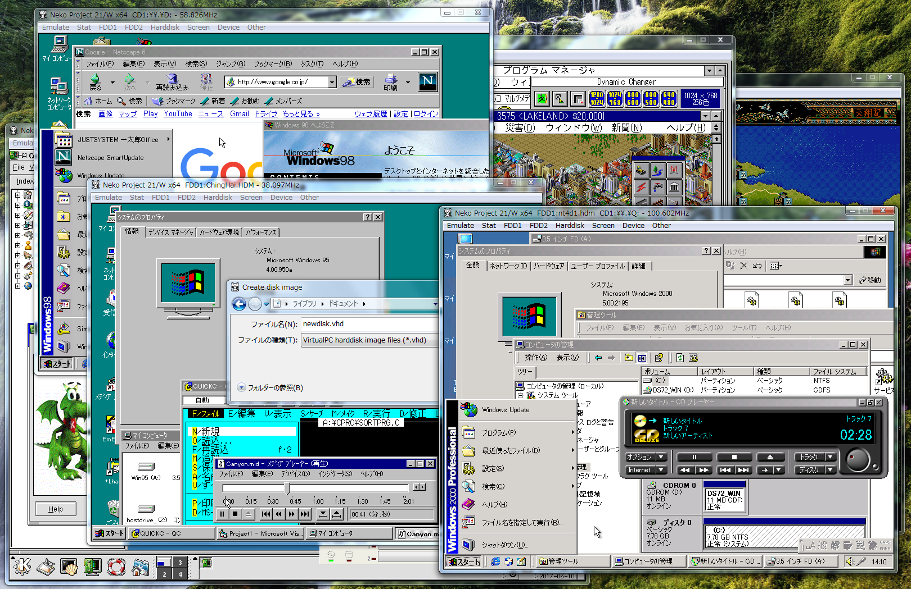

Neko Project 21/W（np21w, ねこープロジェクト21/W）はPC-98エミュレータ Neko Project IIおよびNeko Project 21（ねこープロジェクトII、ねこープロジェクト21）をベースに、ニッチなハードウェアのエミュレーションやPC-98後期モデル（1993～2000頃）の再現に耐えうる改造を施したものです。
本エミュレータの機能追加の多くは98らしさが失われていった後期モデル相当ですので、開発者の腕試し的な要素が強く、一般ユーザーにはあまり役に立たないニッチなものです。 立ち位置としては、PC-98用のゲームやソフトを動かすことよりも、PC-98アーキテクチャ自体に関心がある人へ向けたものになっています。
本家のNeko Project IIやNeko Project 21で動く物は基本的にそのまま動きますが、必ずしも本家より良くなるわけではありません。 PC-98前期～中期（1993頃迄）のエミュレーションは例えばNeko Project II fmgen版などをおすすめします。
【2026/04/29】 ・Neko Project 21/W専用Win3.1ディスプレイアダプタを修正 ・Set/GetPixelと塗りつぶしのバグを修正 ・ベジエ曲線描画対応 ・文字描画バグ修正 ・StretchDIBitsを実装 ・Win9xでのパフォーマンス向上 【2026/04/25】 Neko Project 21/W ver0.86 rev101β11を公開しました。 ・Neko Project 21/W専用Win3.1ディスプレイアダプタを修正 ・Win9xでもそこそこ使えるようにした ・SetDIBitsToDeviceの実装が変だったのを修正 【2026/04/12】 Neko Project 21/W ver0.86 rev101β10を公開しました。 ・Neko Project 21/W専用Win3.1ディスプレイアダプタを修正 ・ペイントブラシのスプレーや消しゴムや範囲選択が動くようにりました ・bppの指定で15と16が区別されるようになりました ・解像度制限が4096x4096まで緩和されました ・Win9xで強引に動かしたときの描画結果がましになりました 【2026/04/08】 Neko Project 21/W ver0.86 rev101β9を公開しました。 ・Neko Project 21/W専用Win3.1ディスプレイアダプタのディザアルゴリズムを改善 ・Direct3D排他モードオプションを復活 ・メニュー表示が出ないなどの問題があるので基本的に非推奨です ・MPU-PC98II MIDIを微修正 【2026/04/06】 Neko Project 21/W ver0.86 rev101β8を公開しました。 ・Neko Project 21/W専用Win3.1ディスプレイアダプタの修正 ・引数をスタック渡しして高速化 ・ドライバをver0.5へ更新すると使えます 【2026/04/04】 Neko Project 21/W ver0.86 rev101β7を公開しました。 ・Neko Project 21/W専用Win3.1ディスプレイアダプタをさらに修正 ・RLEビットマップの読み込みがおかしかったのを修正 ・画面サイズなどの計算が間違っていたのを修正 ・画面解像度が大きいときにオーバーフローする問題修正 ・256色もディザ描画に対応 ・ステートセーブ対応 ・ドライバもver0.4へ更新してください ・マウスホイール割り当てを変更出来るようにしました ・Device->Mouse->Mouse Wheel Actionから設定します ・音量・マウス速度・カーソルキー・ROLL UP/DOWNから選べます 【2026/04/01】 Neko Project 21/W ver0.86 rev101β6を公開しました。 ・Neko Project 21/W専用Win3.1ディスプレイアダプタをさらに修正 ・256色パレットへ対応しました ・ビットマップ保存時のカラーパレット異常を直しました 【2026/03/29】 Neko Project 21/W ver0.86 rev101β5を公開しました。 ・Neko Project 21/W専用Win3.1ディスプレイアダプタを修正 ・ドライバもver0.2へ更新してください ・MIDIの挙動を直しました 【2026/03/26】 Neko Project 21/W ver0.86 rev101β4を公開しました。 ・Neko Project 21/W専用Win3.1ディスプレイアダプタを試験実装 ・様々な解像度や色数に設定できます ・別途配布しているnpdisp16がドライバです ・技術的に遊ぶための物ですので実用性を求めないでください 【2026/03/05】 Neko Project 21/W ver0.86 rev101β3を公開しました。 ・WABなしで縦480pxを超える表示や80桁を超える表示に対応 ・30行BIOSの50行モードや90桁BIOSを使用できます ・80桁を超えの可否は設定でON/OFF出来ます ・90桁BIOSを使うときはマルチスキャンディスプレイモードにしてください 【2026/02/28】 Neko Project 21/W ver0.86 rev101β2を公開しました。 ・CDのトラック情報取得（READ TOC）の結果がおかしかったのを修正 【2026/02/26】 Neko Project 21/W ver0.86 rev101β1を公開しました。 ・MS-DOS版シームレスマウスでカーソルがぶれる現象を起こりにくくした ・シームレスマウスにピクセル座標取得モードを追加 ・MS-DOS版シームレスマウスVer1.7と組み合わせるとWAB有効でも位置がずれなくなるはずです 【2026/02/19】 Neko Project 21/W ver0.86 rev100を公開しました。 ・プリンタのオンライン状態を検出できるようにした ・ESC/Pエミュレーションで縦倍角指定が機能していなかったのを修正 ・印刷エミュレーションで上付と下付文字を実装 ・印刷エミュレーションで描画位置ずれを修正 ・逆改行印刷に対応した ・HOSTDRVで相対パスを正式にOKとした 【2026/02/07】 Neko Project 21/W ver0.86 rev99を公開しました。 ・パラレルポートによる印刷エミュレーション強化 ・実パラレルポート以外にファイルダンプ、名前付きパイプ、Windowsスプーラを選択できます ・Windowsスプーラの場合、RAW出力の他にPC-PR201またはESC/Pのエミュレーションが可能です ・PC-PR201エミュレーションの場合、印刷時には「左揃え」で「連続」や「シートフィーダ」にしてください（印字位置ずれ回避のため） ・Win2000でパラレルポートでの印刷ができない問題を修正 ・1.25MBフォーマットで77-79シリンダがあるベタFDイメージに対応 ・77-79シリンダがあるものはnp21/wでしか読めません（恐らく） ・元の77シリンダでトリミングするツールも用意しました（Neko Project 21/W ツール類として配布） ・ブートストラップローダでAH,ALレジスタの値を見るようにした ・SCSIステートセーブのバグ修正 ・エミュレーションIDE BIOSで異常なDA/UAが通ってしまう問題を修正 ・INT 1BhでDMAバンクを跨ぐ転送がエラーになっていなかったのを修正 ・rev96β3から実機IDE BIOSが使えなくなっていたのを修正 ・ただし使用は非推奨です ・実機IDE BIOS不使用時でもダミーのIDE BIOSを置くようにした ・ダミー（実質不使用）ですのでUMB用に潰しても大丈夫なはずです 【2025/12/26】 Neko Project 21/W ver0.86 rev98を公開しました。 ・バイナリが修正BSDライセンス＋fmgenライセンスになりました ・再配布や組み込みを行った際にGPLを気にしなくてよくなります ・ソースも標準構成ではGPLのコードを使用しなくなりました ・rev97以前のステートセーブは引き継げますがOPL3だけは互換性が少し低いです ・rev97以前のステートセーブの場合OPL3はキーオフの状態でロードされます ・ソフトウェアキーボードをリサイズできるようになりました 【2025/12/09】 Neko Project 21/W ver0.86 rev97を公開しました。 ・FDDメニューに同じディレクトリにあるFDイメージファイルの一覧を表示するようにした ・マウントしているイメージファイルと同じ拡張子のものが表示対象です ・マウントしていない場合は最後に開いたファイルに基づいて一覧表示されます ・表示は最大20ファイルまでです ・要らない場合はINIにdirfdlst=falseを書くと無効（従来通り）になります ・サウンド再生の同期が頻繁なときにSB16のサンプリング変換が狂う問題を修正 ・SB16のDSP周辺コードからDOSBox由来コードを削除し新規作成 ・いちおう修正BSDライセンスとなります ・ステートセーブ互換性維持のためデータ構造は似ていますが未使用フラグが多いです ・動作不良も色々直っていると期待しています ・修正BSD版OPL3を追加 ・ソースのsound/mameを除外し、sound/mamebsdを使用すれば修正BSD版になります ・古いC++の場合はsound/mamebsdsubを使用してください ・np21/w rev97はGPL版を使用しています ・Berkeley SoftFloat Release 3を使用できるようにした ・SUPPORT_FPU_SOFTFLOATの代わりにSUPPORT_FPU_SOFTFLOAT3を定義してください ・この場合SoftFloatのライセンスが独自ライセンスから修正BSDに変わります ・SGDT命令の不具合修正 ・動的設定変更でIRQの設定が可能になりました ・本来ソフト的に設定を変えられないものも変更できます ・np21wtool最新版に付属の説明を参照 ・SB16の録音コマンドをダミー実装 ・SB16のDOSドライバでDMAがエラー扱いされなくなります ・ドラッグ＆ドロップ許可設定をOtherメニューに出した ・4bitしか見ないマウス向けの速度制限追加 ・マウスを速く動かすとカーソルが飛ぶソフトが正常になると思います ・Device→Mouse→Limit Max Mouse Speedで有効化 ・MIDI用スレッドの破棄タイミングを間違えていたのを修正 ・FPUのステートセーブが機能していなかったのを修正 【2025/11/17】 Neko Project 21/W ver0.86 rev96を公開しました。 ・十字ボタンがPOVに割り当てられているジョイパッドのためにPOV→XY軸変換設定を追加 ・Sound optionのJoyPadタブに設定があります ・エミュレーション速度を変更できるようにしました ・メニューのEmulate→Change Emulation Speedから変更できます ・テキスト画面の1pxずれを考慮できておらず画面が切れる問題を修正 ・WAB使用時に画面回転すると描画されなくなる不具合を修正 ・画面拡大率に無意味な上限がある問題を修正 ・FONT.ROMがないときの代替フォント生成処理を改良 ・機種依存文字の生成も可能な限り出来るようにしました ・代替フォント名を指定できるようにしました（INIへfontfaceを追記しフォント名を設定） ・作り直したい場合は既存のfont.tmpを一旦削除する必要があります ・font.tmpはただのモノクロビットマップなので、拡張子変更すれば手動修正も出来ます ・フルスクリーン時のDirect3D描画が上手く行かない場合がある不具合を修正 ・BCD関連のCPU命令を修正 ・SoftFloat FPUの16bit整数ストア命令でエラーフラグが立たない問題を修正 ・SoftFloat FPUの整数ストア命令でエラー時の値を実機に合わせた ・SoftFloat FPUのスタックオーバーフロー時にフラグが適切に立たない問題を修正 ・FM音源などの再生時にタイミングが不安定になりにくくしてみました ・Configureのマルチスレッドも有効化推奨です ・MPU MIDIのBUSYフラグの立て方が不味かったのを修正 ・86PCMの挙動を色々修正してみました（変になっていたら教えて下さい） ・SCCI2に対応してみました（試せる実機を持っていませんので変だったら教えて下さい） ・fmgen有効の時に外部音源と同時に鳴ってしまう問題を修正 ・実行速度改善のためのコンパイラ最適化のチューニングを実施
本家から変更されている主要な部分は以下の通りです。